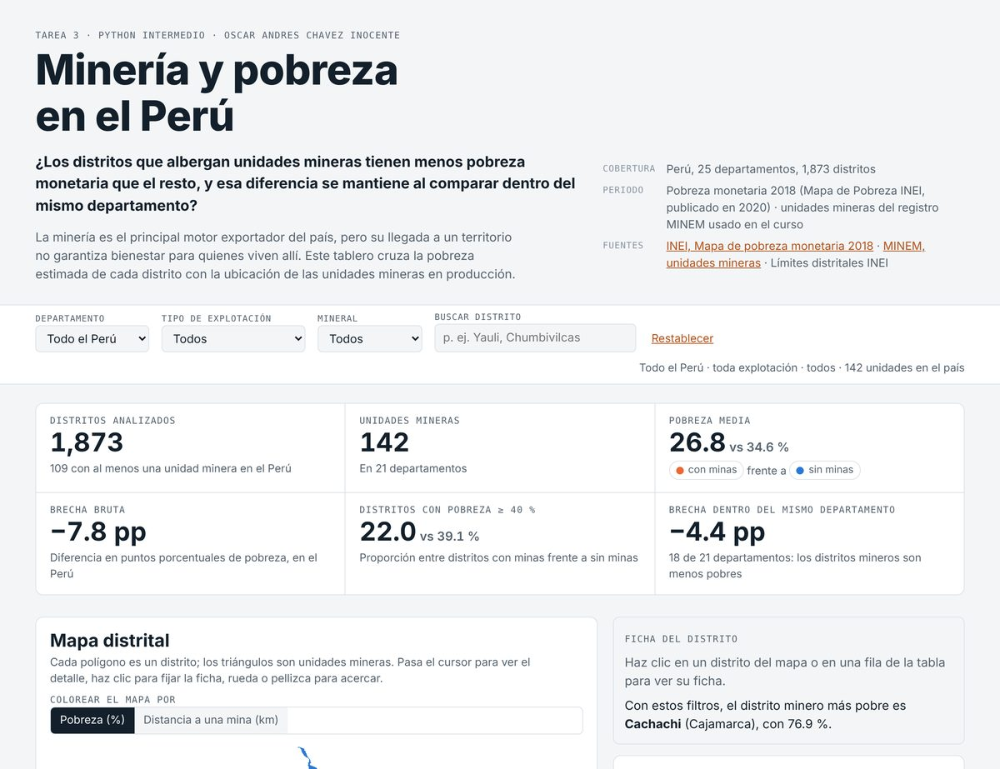

Dashboard · D3.js · Reel con IA
Minería y pobreza en los 1,873 distritos del Perú
Pregunta: ¿los distritos con minas son menos pobres que el resto, aun dentro del mismo departamento?
Resultado: son 7.8 puntos menos pobres (26.8 % contra 34.6 %), pero al comparar dentro de cada departamento la brecha baja a 4.4 puntos. Los 8 distritos mineros de Cajamarca promedian 52.9 %.